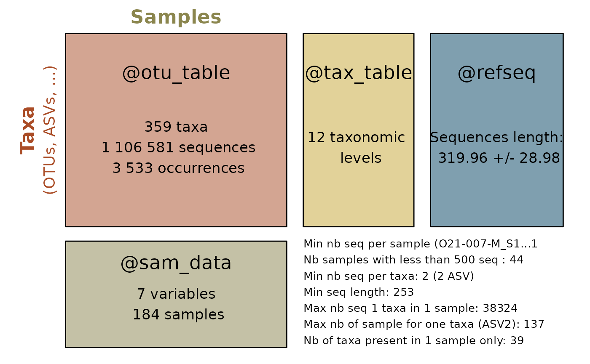

Re-clustering ASVs
Using decipher or Vsearch algorithm
data(data_fungi_sp_known)
otu <- asv2otu(data_fungi_sp_known, method = "clusterize")
#> Partitioning sequences by 8-mer similarity:
#>
iteration 16 of up to 400 (100.0% coverage)
#>
#> Time difference of 0.96 secs
#>
#> Sorting by relatedness within 4 groups:
#>
iteration 53 of up to 324 (100.0% stability)
#>
#> Time difference of 3.39 secs
#>
#> Clustering sequences by 8-mer similarity:
#> ================================================================================
#>
#> Clusters via relatedness sorting: 97.6% (0% exclusively)
#> Clusters via rare 6-mers: 100% (2.4% exclusively)
#> Estimated clustering effectiveness: 100%
#>
#> Time difference of 1.11 secs
otu_vs <- asv2otu(data_fungi_sp_known, method = "vsearch")The vsearch method requires the installation of Vsearch.
summary_plot_pq(data_fungi_sp_known)
#> Cleaning suppress 0 taxa and 1 samples.
summary_plot_pq(otu)
#> Cleaning suppress 0 taxa and 1 samples.
Using lulu algorithm (link to LULU article)
library(devtools)
install_github("adrientaudiere/lulu")
library("lulu")
data(data_fungi_sp_known)
lulu_res <- lulu_pq(data_fungi_sp_known)
summary_plot_pq(data_fungi_sp_known)
summary_plot_pq(lulu_res$new_physeq)